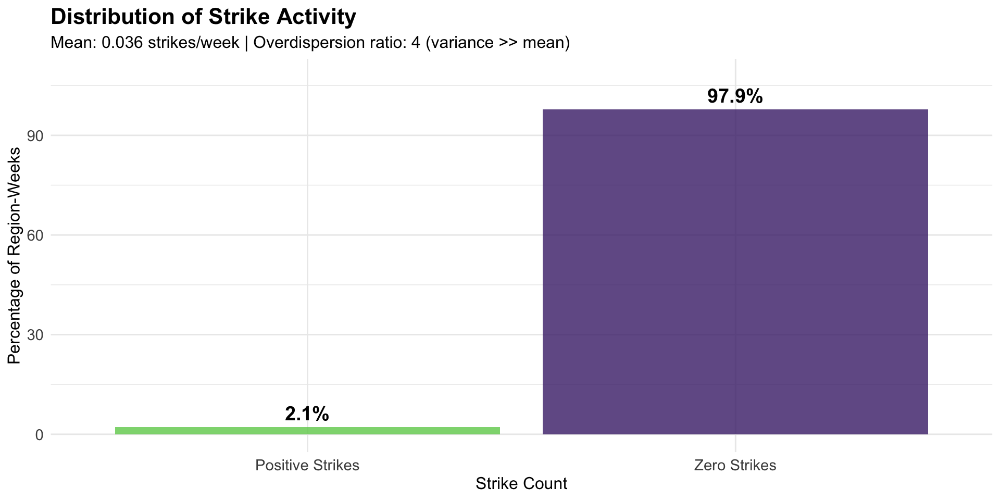
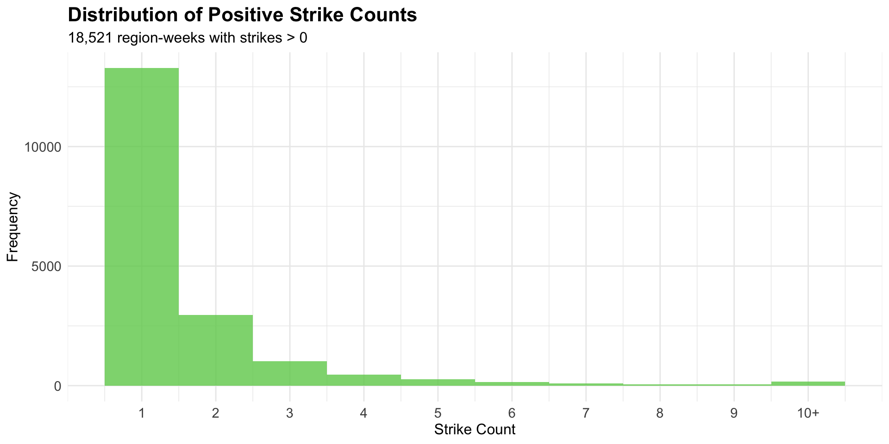
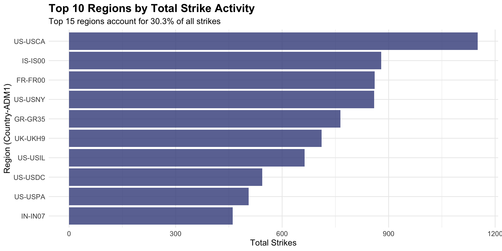
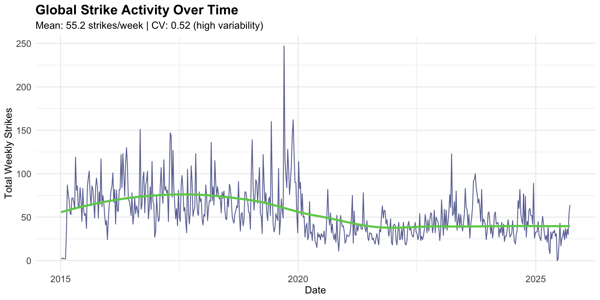
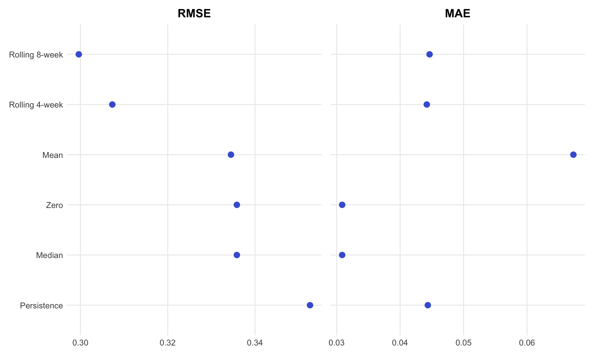
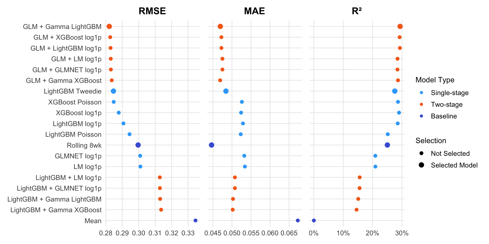
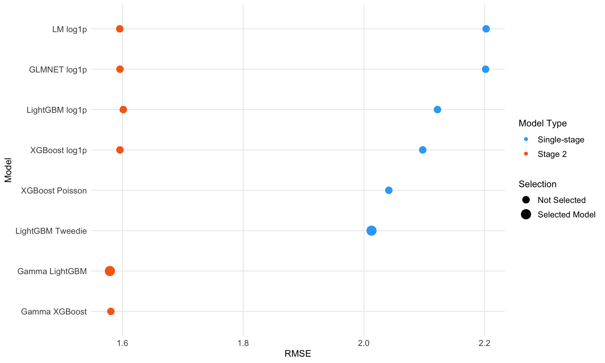
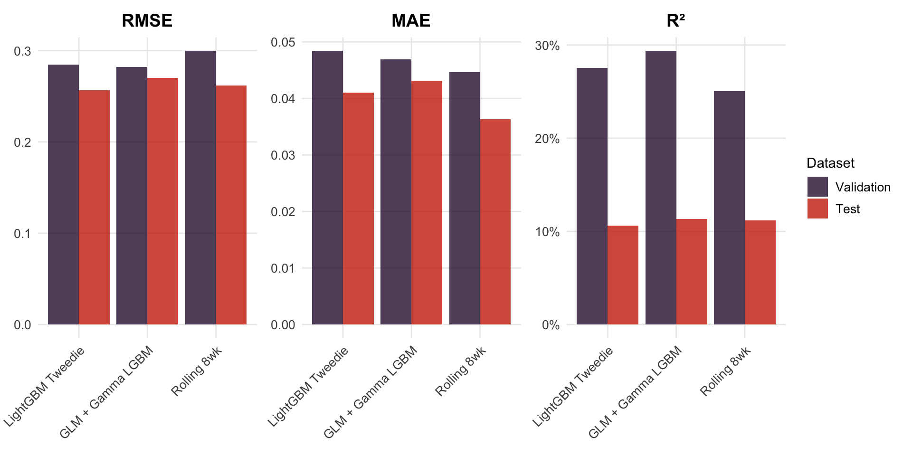
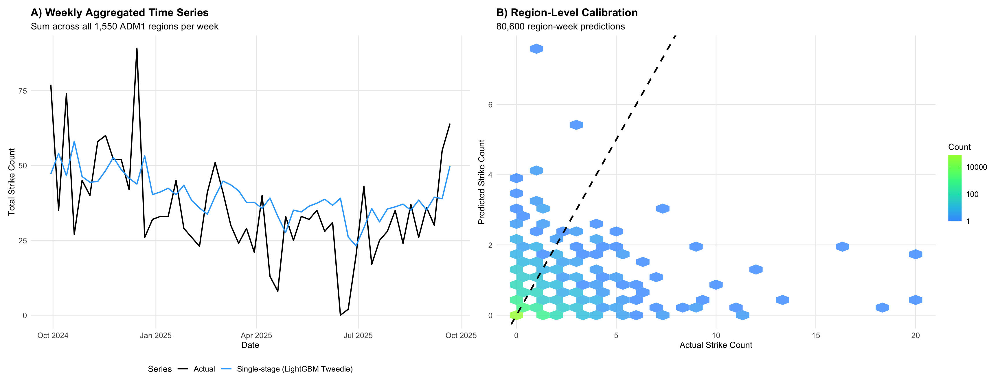
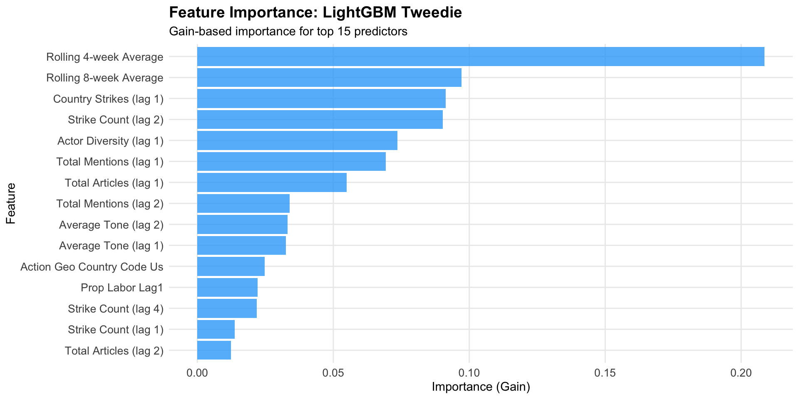

graph TD
A[Raw events] --> B[ADM1 filter]
B --> C[High-confidence filter]
C --> D[GKG enrichment]
D --> E[STRIKE theme filter]
E --> F[Final dataset]
A Preliminary Analysis
March 25, 2026
gdelt-bq.gdeltv2.events: event-level records (geography, date, actors, intensity, tone, source URL).eventmentions: article mentions of events (Confidence, source type, tone).gkg: Global Knowledge Graph (per-document themes, tone, people, source URLs).graph TD
A[Raw events] --> B[ADM1 filter]
B --> C[High-confidence filter]
C --> D[GKG enrichment]
D --> E[STRIKE theme filter]
E --> F[Final dataset]
Downloaded strike events with latitude and longitude info. Yields table with 492,500 rows.
Filtered for events with valid ADM1 codes. Yields table with 328,982 rows.
Queried the eventmentions table to find events with high-confidence mentions (Confidence ≥80). Leaves us with 134,141 events.
WITH high_conf AS (
SELECT m.GLOBALEVENTID,
COUNTIF(m.Confidence >= 80) AS high_conf_mentions,
COUNT(DISTINCT m.MentionSourceName) AS unique_sources
FROM `gdelt-bq.gdeltv2.eventmentions` m
JOIN `gdelt-449818.gdelt_analysis.strike_events` s
ON m.GLOBALEVENTID = s.GLOBALEVENTID
GROUP BY m.GLOBALEVENTID
)
SELECT s.GLOBALEVENTID, h.high_conf_mentions, h.unique_sources
FROM `gdelt-449818.gdelt_analysis.strike_events` s
JOIN high_conf h ON s.GLOBALEVENTID = h.GLOBALEVENTID
WHERE h.high_conf_mentions > 0;eventmentions table
Select only eventmentions that refer to high-confidence strike events.
Materialize only GKG documents that mention strike events. Expensive scan (~20TB, ~$128): Do once.
Aggregate document-level tone to event level and collect article URLs.
CREATE OR REPLACE TABLE gdelt-449818.gdelt_analysis.strike_event_tone AS
SELECT m.GLOBALEVENTID,
AVG(CAST(SPLIT(g.V2Tone, ',')[OFFSET(0)] AS FLOAT64)) AS avg_tone,
ARRAY_AGG(DISTINCT g.DocumentIdentifier IGNORE NULLS) AS article_urls
FROM `gdelt-449818.gdelt_analysis.strike_mentions` m
JOIN `gdelt-449818.gdelt_analysis.strike_gkg_docs` g
ON m.MentionIdentifier = g.DocumentIdentifier
GROUP BY m.GLOBALEVENTID;
Tokenize GKG V2Themes and aggregate unique themes per event.
-- Event-level themes (tokenize + aggregate)
CREATE OR REPLACE TABLE gdelt-449818.gdelt_analysis.strike_event_themes AS
SELECT m.GLOBALEVENTID,
STRING_AGG(DISTINCT TRIM(theme), ';') AS all_themes
FROM `gdelt-449818.gdelt_analysis.strike_mentions` m
JOIN `gdelt-449818.gdelt_analysis.strike_gkg_docs` g
ON m.MentionIdentifier = g.DocumentIdentifier
CROSS JOIN UNNEST(SPLIT(g.V2Themes, ';')) AS theme
GROUP BY m.GLOBALEVENTID;
Combine tone and themes into single reusable event-level table.
Tone metrics → Used as predictors in strike forecasting models, measure overall sentiment of news coverage (scale: -100 to +100, but typically ranges -10 to +10)
Mention/Article counts → Captures media attention and event significance, e.g. total event mentions, total articles related to event
Themes → Used to filter events to strike-relevant content (STRIKE theme filter)
⚠ PLACEHOLDER — url_validation_coded.csv missing
Four slides (validation chart, definite strikes, definite non-strikes, borderline cases) were removed pending recovery of the hand-coded validation sample from papers/nyu-sds-conf/url_validation_coded.csv.




| Metric | Value |
|---|---|
| Mean strikes per week | 55.2 strikes |
| Coefficient of variation | 0.52 (high variability) |
| Peak week | 2019-09-15 |
| Peak week strikes | 247 strikes |
Data characteristics:
Task: Predict weekly strike counts at the ADM1 geographic level
Single-stage models predict counts directly in one step:
Two-stage (hurdle) models decompose prediction into:
Seasonality and trends:
Lagged strike activity:
Media coverage (lagged):
Actor characteristics:
Spatial spillovers:
Geographic controls:
Tidymodels provides a unified framework for modeling in R:
Enables consistent workflow across different model types and engines.
tree_recipe <- recipe(strike_count ~ ., data = pretest_df) |>
update_role(date, new_role = "id") |>
step_novel(action_geo_adm1_code, action_geo_country_code) |>
step_other(action_geo_adm1_code, threshold = 0.02) |>
step_mutate(is_year_end = as.numeric(is_year_end)) |>
step_dummy(all_nominal_predictors()) |>
step_impute_median(all_numeric_predictors()) |>
step_lincomb(all_numeric_predictors()) |>
step_corr(all_numeric_predictors(), threshold = 0.999) |>
step_zv(all_predictors())Key steps: Handle novel levels, pool rare categories, create dummies, impute missing values, remove collinearity
# Linear model on log-transformed target
lm_log_spec <- linear_reg() |>
set_engine("lm") |>
set_mode("regression")
# LightGBM with Tweedie objective for count data
lgbm_twd_spec <- boost_tree(
trees = tune(),
tree_depth = tune(),
min_n = tune(),
loss_reduction = tune(),
sample_size = tune(),
mtry = tune(),
learn_rate = tune()
) |>
set_engine("lightgbm",
objective = "tweedie",
tweedie_variance_power = 1.3,
num_threads = 1)Parsnip provides unified interface across engines (lm, glmnet, xgboost, lightgbm, etc.)
# Combine model specification and recipe
wf_lm_log <- workflow() |>
add_model(lm_log_spec) |>
add_recipe(lm_log_recipe)
# Tune hyperparameters on resamples
tuned_lgbm <- tune_grid(
wf_lgbm_twd,
resamples = val_resamples,
grid = grid_boosted,
metrics = metric_set(rmse, mae, rsq),
control = control_grid(save_pred = FALSE, verbose = TRUE)
)
# Select best configuration
best_config <- select_best(tuned_lgbm, metric = "rmse")
final_wf <- finalize_workflow(wf_lgbm_twd, best_config)Workflows bundle preprocessing and modeling for reproducible pipelines
Expanding window approach:
Why expanding?
Boosted trees (LightGBM/XGBoost): 24 configurations
trees: 200-600tree_depth: 3-8min_n: 2-20loss_reduction: 0-5sample_size: 0.6-0.9mtry: 2-12learn_rate: 0.001-0.1 (log scale)GLMNET: 50 configurations (10 penalty × 5 mixture levels)
Selection metrics: Both RMSE and MAE tested (results robust)
Problem: log1p transformation introduces bias on back-transform
Solution: Duan’s smearing estimator
Result: Unbiased predictions on original scale






Model performance:
Distributional shift challenge:
Important predictors:
Takeaway: Single-stage models may handle rare events more robustly than hurdle approaches when base rates are extremely low and unstable
Challenges:
Current: Dictionary-based sentiment (-100 to +100 scale, typically -10 to +10)
Limitations: No context awareness, static dictionary
Modern ML: Transformer models + LLMs with few-shot prompting for better context and domain adaptation